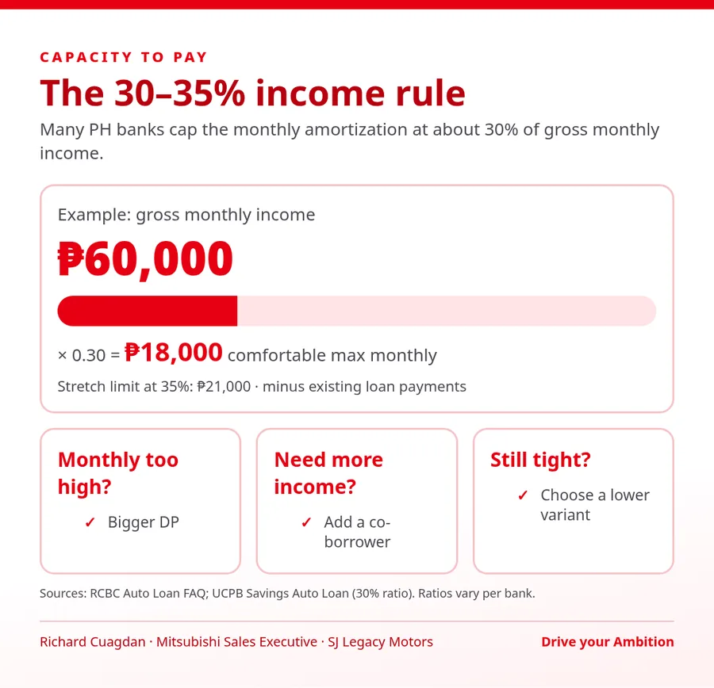
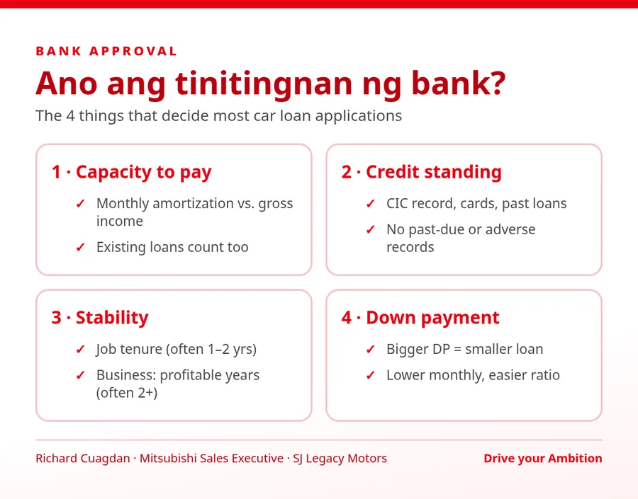
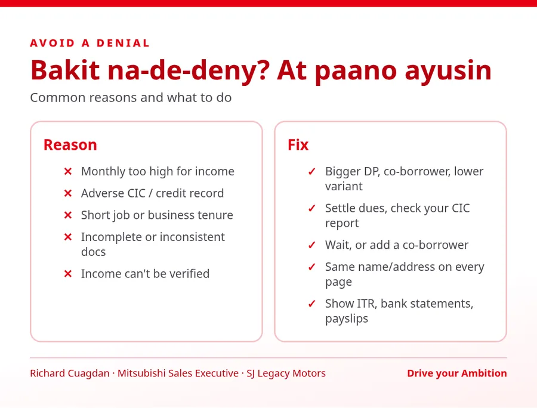
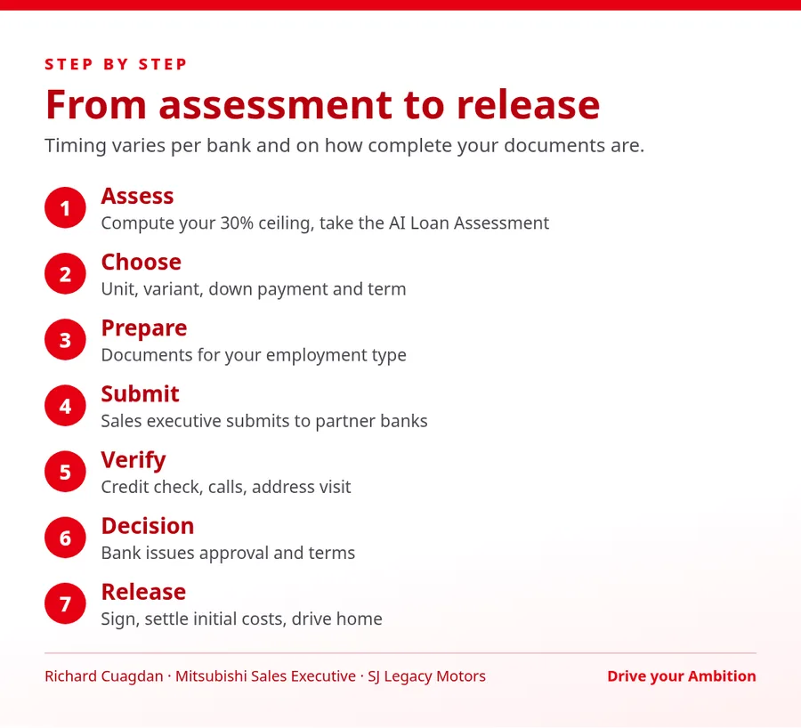

Drive your Ambition
Bank Approval Guide & Checklist
Requirements, documents, budget worksheet & timeline – para handa ka bago mag-apply sa bank.
Typical lists based on published BDO, Metrobank and RCBC requirements. Each bank may ask for more or less.

| Item | Formula | Your numbers |
|---|---|---|
| A. Gross monthly income (you) | From payslip / ITR | PHP |
| B. Co-borrower gross monthly income | If any | PHP |
| C. Total gross income | A + B | PHP |
| D. Max total monthly debt (30%) | C × 0.30 | PHP |
| E. Existing loan payments | Cards, salary/housing loans | PHP |
| F. Room for car amortization | D − E | PHP |
| G. Monthly of target unit, DP option 1 | Ask your sales executive | PHP |
| H. Monthly of target unit, DP option 2 (bigger DP) | Ask your sales executive | PHP |
Reading it: if G ≤ F, option 1 fits your income. If only H ≤ F, the bigger DP is the safer choice. If neither, consider a lower variant, a co-borrower or a bigger DP. Also budget for fuel, insurance renewal, PMS and parking.



Start my AI Loan AssessmentMessage Richard
RCBC Auto Loan FAQ (rcbc.com/Content/Forms/FAQs_auto.pdf) · UCPB Savings Auto Loan (ucpbsavings.com/auto-loan) · Metrobank Car Loan requirements (metrobank.com.ph) · BDO Auto Loan (bdo.com.ph/personal/loans/auto-loan) · CIC: About your credit report (cic.gov.ph).
This guide is general information, not a loan offer. Requirements, ratios and rates vary per bank and may change. Any result from our tools is a Pre-qualified estimate only; all financing is subject to bank approval. Data Privacy: Mitsubishi San Juan Motors · DPO richard.cuagdan20@gmail.com.